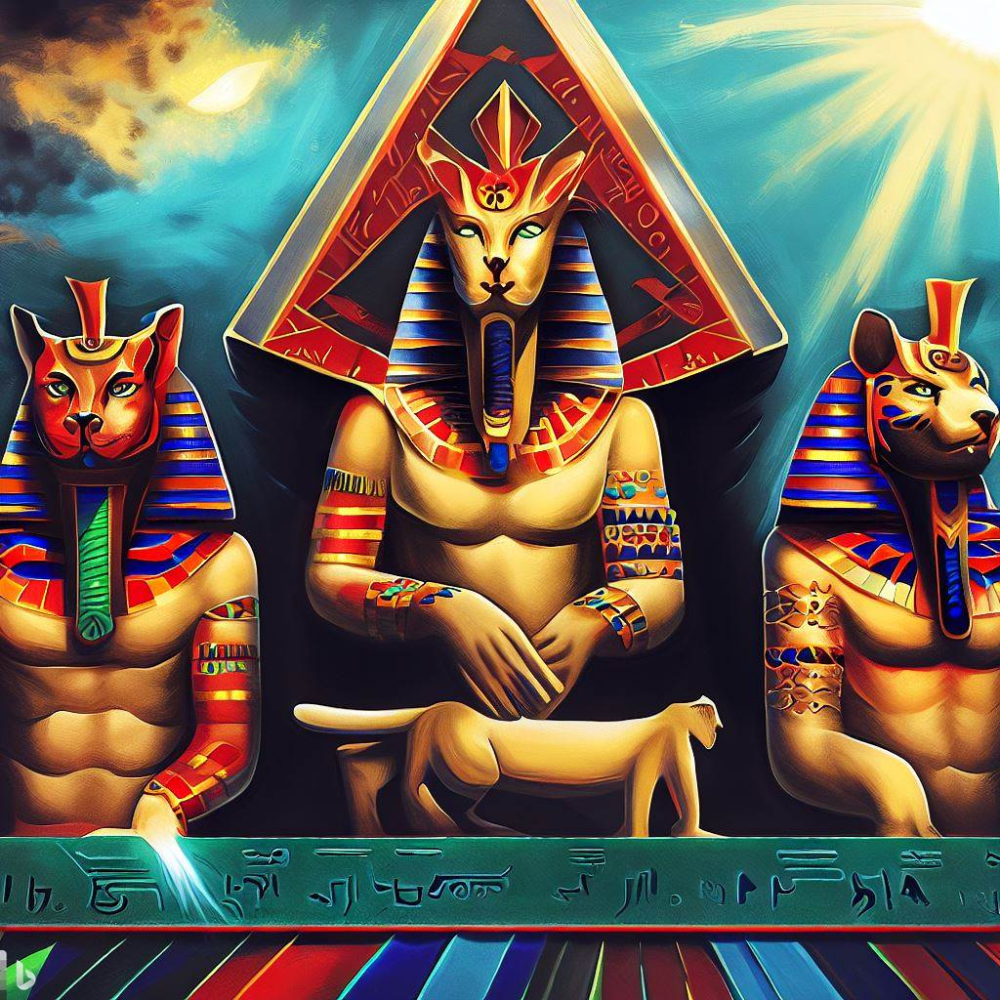
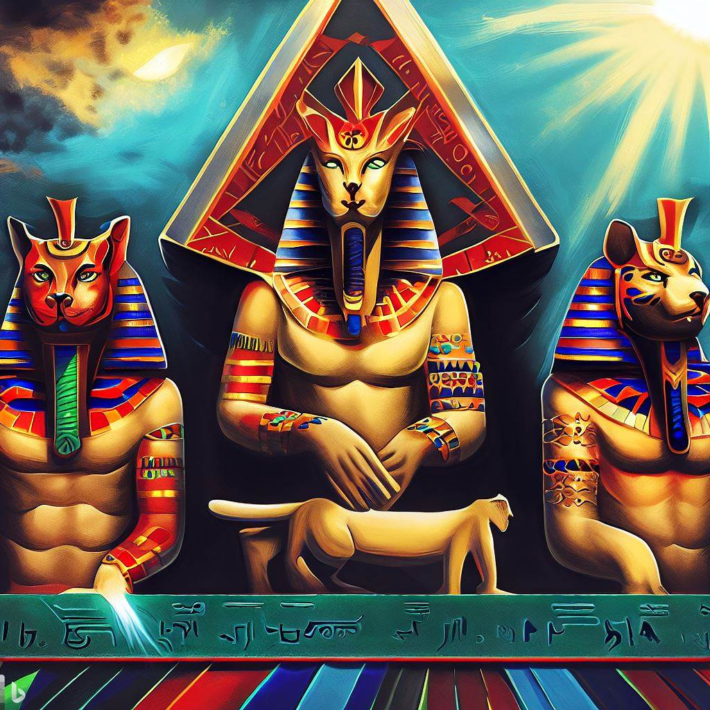

Exposición de Maria del Mar Antúnez
Explora el mundo sombrío y fascinante de la exposición "Pesadillas Fantásticas", una colección de fotografías de terror creada por la talentosa estudiante María del Mar Antúnez. Este emocionante recorrido visual te llevará a un viaje inquietante a través de escenas surrealistas y personajes espeluznantes. María ha sabido combinar a la perfección la fotografía con el arte del maquillaje y el vestuario para dar vida a sus visiones fantásticas y aterradoras. Cada obra evoca un sentido de misterio y provoca una reflexión inquietante sobre nuestros miedos más profundos. Si eres un amante del arte, de lo fantástico y lo inusual, no te pierdas esta inolvidable exposición.
Exposición de Carmelo Ortudia Zamora
Bienvenido a la impresionante exposición del estudiante Carmelo Ortudia Zamora. Esta exhibición destaca una fascinante colección de esculturas renacentistas, cada una meticulosamente creada y restaurada con detalles precisos y una atención inigualable por la autenticidad. Carmelo ha invertido una cantidad incalculable de horas en la investigación y el perfeccionamiento de cada pieza, con el objetivo de capturar la esencia y el estilo del período renacentista. La exposición cuenta con una variedad de piezas que abarcan todo el período renacentista. Desde bustos de personajes históricos importantes hasta representaciones detalladas de mitología y escenas de la vida diaria, hay algo para cada amante del arte renacentista en esta exposición. Carmelo ha trabajado arduamente para capturar el espíritu del Renacimiento en cada pieza. Sus esculturas reflejan la influencia de grandes maestros como Miguel Ángel y Donatello, pero también aportan una interpretación única y contemporánea de los temas renacentistas. Invitamos a todos los visitantes a explorar esta exposición y a apreciar la habilidad y la pasión que Carmelo ha puesto en cada una de sus obras. Estamos seguros de que quedarás tan cautivado por su talento como nosotros.
Exposición de Ana Olona Gonzáles
Nos complace presentar la magnífica exposición de la talentosa estudiante Ana Olona Gonzáles, que ha decidido hacer su propia interpretación de una de las pinturas más reconocidas en el mundo: La Última Cena. Esta exposición incluye una serie de cuadros que reflejan diversas interpretaciones y temáticas de La Última Cena. Cada obra es una mezcla única de técnicas tradicionales y contemporáneas, con una variedad de estilos que van desde el realismo hasta el impresionismo y el cubismo. Ana ha hecho un trabajo extraordinario al explorar diversos temas y representaciones, incluyendo versiones en las que se cambian los roles de género, interpretaciones modernas donde los apóstoles son figuras contemporáneas, y también representaciones simbólicas donde la cena se sitúa en distintos contextos culturales. La exposición busca resaltar la versatilidad y la profundidad de la obra original a través de la lente creativa de Ana, invitando a los espectadores a contemplar La Última Cena desde perspectivas completamente nuevas. Este evento es un testimonio de la habilidad de Ana para desafiar los límites del arte y la creatividad.

Exposición de Carlos Carrasco de Manzanares
La exposición "Deidades del Nilo", realizada por el estudiante Carlos Carrasco de Manzanares, nos invita a un viaje visual por el antiguo Egipto. Esta fascinante colección de arte explora las deidades egipcias a través de interpretaciones contemporáneas, uniendo el pasado con el presente. Con una paleta de colores vívida y una atención excepcional al detalle, Carlos presenta una visión única y fresca de dioses y diosas como Anubis, Isis, Horus y Osiris. Cada cuadro está meticulosamente diseñado para capturar la esencia y los poderes de la deidad que representa, con el objetivo de proporcionar una comprensión más profunda de la mitología y la cultura egipcias. Carlos ha pasado más de un año inmerso en la investigación y la creación de esta colección. El resultado es una obra de arte que muestra su apreciación y entendimiento de la mitología egipcia, y también su habilidad para reinterpretarla a través de su visión personal y artística. La exposición "Deidades del Nilo" es una muestra excepcional de la pasión y el talento de Carlos por la pintura y la historia. No se pierda esta oportunidad de explorar el antiguo Egipto a través de la lente de un artista emergente prometedor.
 

Exposición de Miércoles Addams
Bienvenidos a la asombrosa exposición de arte de Miércoles Addams, una incursión en los rincones más oscuros y temibles del imaginario humano. Conocida por su gusto por lo macabro, Miércoles nos presenta una colección inquietante de pinturas que capturan la esencia del terror en lienzo. Esta exposición, titulada "Pesadillas en Tinta", es una amalgama de retratos góticos y escenas de horror que se desbordan con una narrativa inquietante. Cada pieza de arte es un estudio de los miedos más profundos del ser humano, exhibidos de una manera perturbadoramente bella. Las obras maestras de Miércoles, desde sus espeluznantes casas embrujadas hasta sus bosques sobrenaturales, tienen la habilidad única de atraer y aterrorizar simultáneamente al espectador, dejando una impresión duradera y un deseo insaciable de más. No se pierdan esta exposición exclusiva y asombrosa, que seguro promete ser una experiencia que te mantendrá despierto por las noches.